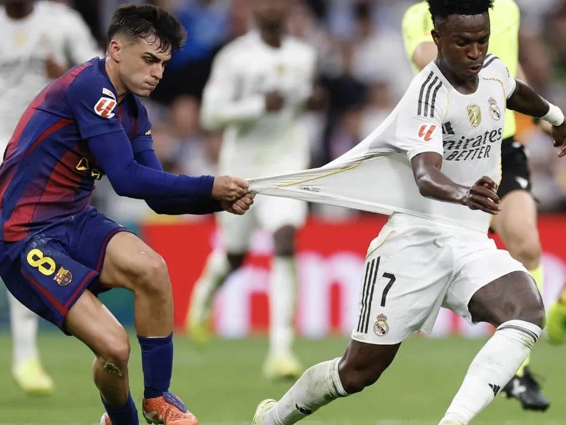
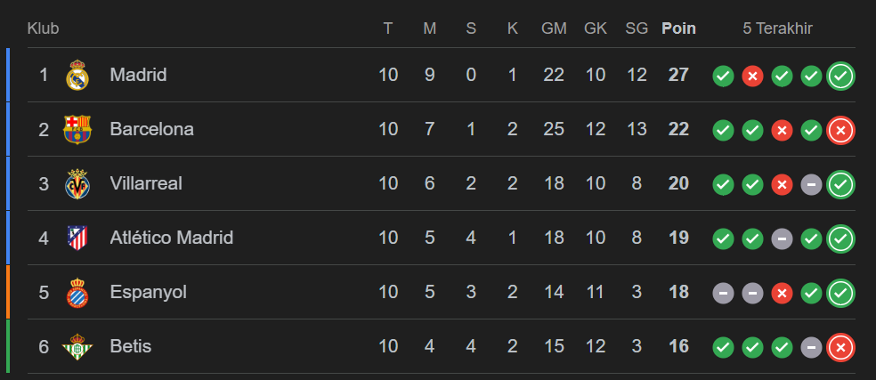

Pedri Tarik Jersey Vini di El Clasico 2025
Real Madrid VS Barcelona Minggu, 26/10

Bernabeu gak cuma menyajikan drama panas di lapangan, tapi juga momen
lucu yang langsung viral di media sosial. Salah satunya datang dari
duel antara dua bintang muda, Vinícius Jr. dan Pedri
Dalam satu momen perebutan bola, Pedri tertangkap kamera menarik
jersey Vini dengan cukup keras, sampai bajunya hampir melar. Tapi yang
bikin ramai, ekspresi Pedri saat itu seolah-olah sedang 'meminta' baju
Vini, bukan lagi bertahan di lapangan
Setelah pertandingan berakhir dengan kemenangan 2-1 untuk Real Madrid,
Vinícius gak mau ketinggalan ikut nimbrung di dunia maya. Ia
mengunggah potret momen itu di akun Instagram pribadinya, @vinijr.
Postingan itu langsung diserbu warganet dari seluruh dunia. Banyak
yang ngakak, tapi ada juga yang bilang ini jadi bentuk 'balas dendam
manis' dari Vini buat Pedri.
Klasemen Liga Spanyol Usai Madrid Bungkam Barcelona
La Liga

Real Madrid mulai membuka jarak atas para rivalnya di klasemen Liga
Spanyol. Itu setelah Los Blancos membungkam Barcelona di El Clasico.
Real Madrid sukses mengalahkan Barcelona di Santiago Bernabeu, Minggu
(26/10/2025) malam WIB, dalam lanjutan Liga Spanyol.
Gol Kylian Mbappe dan Jude Bellingham memenangkan mereka, dengan Barca
hanya membalas sekali melalui Fermin Lopez.
Hasil itu cukup
signifikan terhadap klasemen Liga Spanyol. Sebab itu berarti pasukan
Xabi Alonso kini unggul lima poin atas Barcelona di posisi dua.
Sementara itu masih ada dua tim yang belum memainkan laga pekan
kesembilannya, yakni Atletico Madrid dan Real Betis. Keduanya
sama-sama berpeluang naik ke peringkat empat dengan kemenangan.